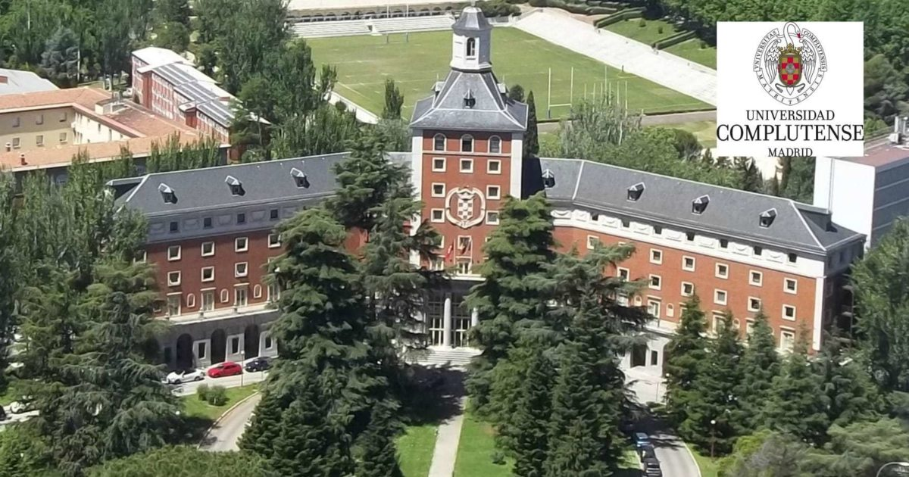
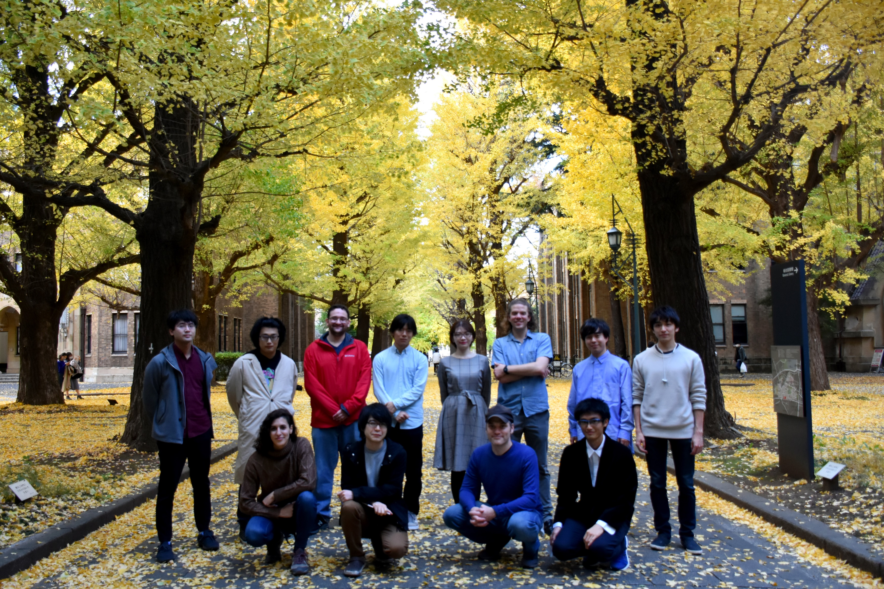
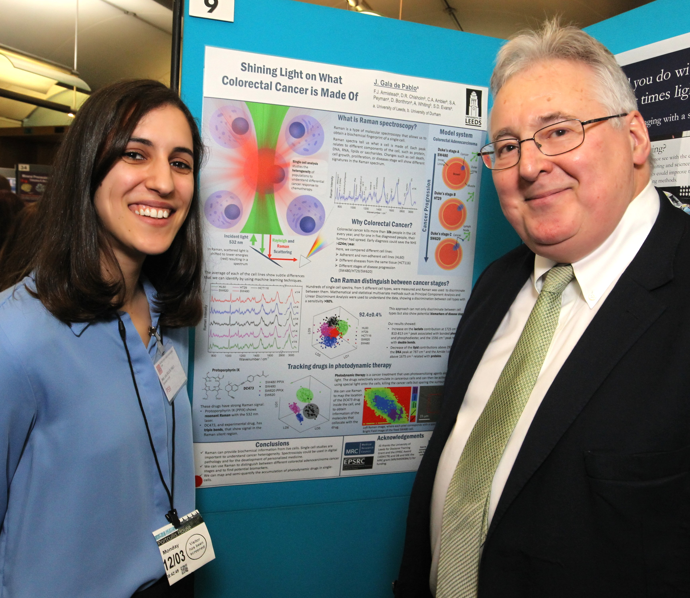

About me
Education

I studied Physics and Biochemistry at the University Complutense of Madrid (2009-2015).
I was born in Madrid, Spain. After High school, I joined a BSc in Physics at the University Complutense of Madrid. A year later, I joined a BSc in Biochemistry, and I studied both BScs simultaneously. In 2012, I obtained the Erasmus Mundus scholarship and moved to Leeds for a year, where I joined the Molecular and Nanoscale Physics research group (University of Leeds) for a summer research scholarship. Years later, after finishing my BsCs (2015) I returned to the University of Leeds for a PhD.
PhD

At the University of Leeds, I worked with an integrated confocal fluorescence and Raman microscope.
I joined the Molecular and Nanoscale Physics Group in 2015 as a PhD student, and worked on my PhD for the following three and a half years. During my PhD, I used Raman spectroscopy for biochemical phenotyping of live single-cells of different stages of colorectal cancer, with the findings published in the Journal of Raman spectroscopy (2018).
During my PhD, I used Raman spectroscopy for biochemical phenotyping of live single-cells of different stages of colorectal cancer.
I also studied the accumulation and photoactivation of a photosensitiser in single colorectal cancer cells, with both Raman and fluorescence (fluoRaman, a term that has been referenced in the literature) and for the single-cell dynamics of the photosensitiser activation using Raman spectroscopy. These findings were published in the Analyst (2019 and 2020). I also became proficient on the main chemometric tools for its analysis, including Principal Component Analysis, Classification Trees, Linear Discriminat Analysis or Support Vector Machines.
During my PhD, I also worked with soft lithography microfluidics device fabrication and compatibility with Raman spectroscopy, co-authoring a publication of the Raman analysis of the oil uptake of PDMS in a microfluidic device (SN Applied Sciences, 2020). I also collaborated in multiple microfluidic deformation cytometry studies (Biophysical Journal 2019, Scientific Reports 2020).
I secured 4 travel grants and a conference bursary, and I was awarded 2 poster prizes (1st and 2nd). I was also invited as a speaker to SPEC2018. I was selected for STEM for Britain to present my research at the British Parliament. For the latter, I granted a BBC Radio Leeds interview. I finished my PhD in September 2019.
JSPS Postdoctoral Fellowship

Some of the members of Hiramatsu-team posing under the gingko leaves at the University of Tokyo (2020). Back row (left to right): Shigekazu Takizawa, Ryo Kinegawa, Phil McCann, Ryo Nishiyama, Risako Kameyama, Jorgen Walker Peterson, Yuichi Yajima, Tatsuya Tajima. Front row: Julia Gala de Pablo, Kotaro Hiramatsu (team leader), Matt Lindley and Ryuji Nakao.
At the end of my PhD I secured a standard JSPS fellowship and a grant-in-a-aid to move to the University of Tokyo, working in Goda Lab as part of Kotaro Hiramatsu's team. This was an exciting opportunity for me to explore non-linear spectroscopy, working on a lab-made Fourier Transform Coherent anti-Stokes Raman scattering system, as part of Kotaro Hiramatsu's team. We used FT-CARS for high-throughput vibrational flow cytometry and sorting.
This was an exciting opportunity for me to explore non-linear spectroscopy, working on a lab-made Fourier Transform Coherent anti-Stokes Raman scattering system, as part of Kotaro Hiramatsu's team. We used FT-CARS for high-throughput vibrational flow cytometry and sorting.
I published an Account on high throughput Raman flow cytometry (journal cover), and co-authored a recently submitted study on high throughput Raman activated cell sorting in the fingerprint region (BioRxiv). I used microalgae cells as a model system, working mainly with Euglena, Haematococcus and Muriella cells for paramylon, astaxanthin and starch detection respectively. DUring this time, I got invited as a speaker to SciX2021 and secured a SAS travel grant.
Science engagement

STEM for Britain presentation to members of the Parliament. Julia Gala de Pablo (left) and Dr. Stephen Benn (right), RSB's director of parliamentary affairs (2018).
One of our obligations as scientists is to transmit the our passion for science to both a specialist and a non-specialist audience. I have experience organizing scientific meetings as the Committee Chair of the Serendipity Lab Twitter Workshop (Jun/2020) and co-chair of the 2020 Serendipity Symposium (Dec/2020). Regarding science engagement, I have participated in many science engagement events, including events organized by the IoP, the RSC, Pint of Science, STEM for Britain, and SPIE. I also worked with year 12 students at the Physics and Astronomy Work Experience Week (2018). I recently gave a talk at a Japanese High-school in Chiba (Sep/2021) as part of the JSPS Science Dialogue initiative.